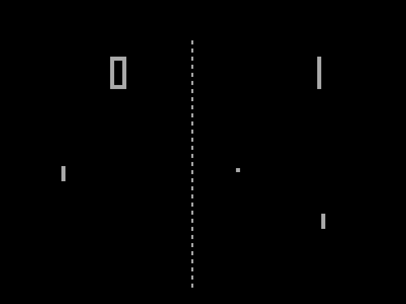
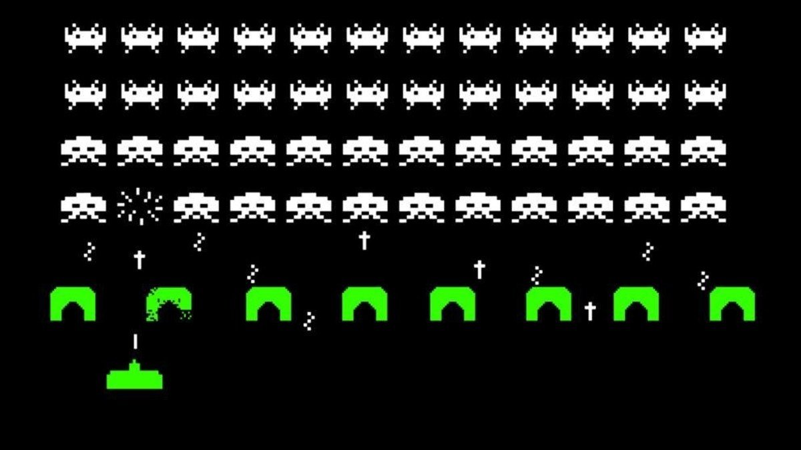
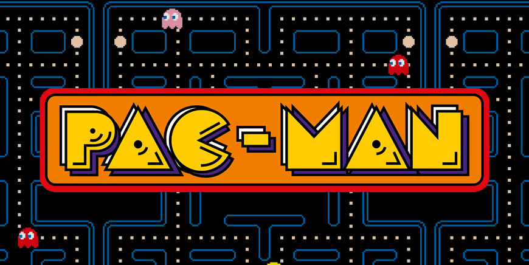

La historia del desarrollo de videojuegos comenzó en la década de 1950, cuando se experimentó con computadoras y se crearon los primeros juegos simples. Desde esos humildes comienzos, la industria ha crecido y evolucionado de maneras sorprendentes.
En 1972, el lanzamiento de Pong por Atari marcó un hito en el desarrollo de videojuegos, popularizando el concepto de juegos de arcade. A lo largo de los años 80 y 90, las mejoras gráficas y narrativas permitieron la creación de títulos icónicos, dando forma a lo que hoy conocemos como la industria del videojuego.
Hoy en día, el desarrollo de videojuegos abarca una variedad de plataformas y géneros, convirtiéndose en una de las formas más influyentes de entretenimiento a nivel mundial.
| Pong | Pong es un videojuego de consolas de primera generación publicado por Atari, creado por Nolan Bushnell y lanzado en 1972. Es un juego de deportes en dos dimensiones que simula un tenis de mesa. |
 |
| Space Invaders | Space Invaders, lanzado en 1978. Es uno de los videojuegos más importantes de la historia. Su objetivo es eliminar oleadas de alienígenas con un cañón láser y obtener la mayor cantidad de puntos posible. |
 |
| Pac-Man | Pac-Man es un videojuego clásico de arcade lanzado en 1980. El jugador controla a Pac-Man, una criatura amarilla que debe moverse por un laberinto comiendo puntos mientras evita ser atrapado por fantasmas. El objetivo es comer todos los puntos en cada nivel sin ser atrapado. |
 |